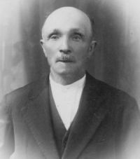

Danilo Lorenzini (nella foto) era garzone dai Buti dell’Arginano, una famiglia con il solo capoccio e tante donne. Era di Siena, di Ravacciano, e svolgeva senza problemi il suo lavoro ricevendo un salario. Dopo dieci anni di servizio un certo giorno lasciò l’Arginano per emigrare a Como, dove poi morì. Giovane sempre allegro era l’unico che a richiesta sapeva far muovere gli orecchi in maniera evidente, e non gli mancava lo spirito come si deduce dalla famosa frase pronunciata all’arrivo di don Ottorino all’Arginano, seguito dal sacrestano col secchiello dell’acqua santa e l’aspersorio per la benedizione della casa:
.

L’anziano Cesare Andreini, garzone per molti anni a Viareggio presso i Landi.
Questa categoria comprendeva non solo garzoni maschi, ma anche bambine e giovanette prese come “fantine” e guardiane.
Difficile avere i dati esatti per il passato di questo fenomeno a Quercegrossa in quanto spesso i parroci non registravano la presenza di questi lavoratori occasionali, ma soltanto gli esposti affidati legalmente alle famiglie, e a volte nemmeno questi. Forse lo stato delle anime del 1841 è l’unico che ci offre un quadro attendibile. Ci dice che nei 19 poderi del popolo di Quercegrossa sono presenti in otto tra garzoni e fantini, con una sola femmina. Nel nostro caso il parroco definisce fantino o fantina i giovani di 14 anni, mentre i più grandi sono detti garzoni:
Guideri Ambrogio di 29 anni: garzone dai Brogi a Casapera;
Maffei Carolina di 14 anni: fantina dai Brogi di Casapera;
Bronzini Bernardo di 23 anni: garzone dai Bruni a Sornano
“E' figlio dello Spedale di Siena”;
Losi Antonio di 14 anni: fantino dai Bruni di Sornano;
Veneri Pasquale di 16 anni: garzone dai Buti al Castello;
Scala (della) Luigi di 20 anni: garzone dai Landi alla Magione;
Giuntini Angelo di 20 anni: garzone dal fornaciaio Ricceri a Petroio
“E figlio dello Spedale di Siena”;
Masti Michele di 14 anni: fantino dai Bartalozzi di Petroio.
La conosciuta famiglia di Egisto Rossi dimora al Mulino con i sette figlioli che vanno da due a ventitre anni, e nel 1929 ci sono i segni di un’altra maternità. E’ da quel momento che i ragazzi di Egisto ed Ersilia incominciarono ad essere mandati come garzoni dai contadini di Gardina, delle Badesse o della Sugarella. Naturalmente dopo aver frequentato i tre anni scolastici obbligatori. Restava comunque una decisione sofferta l’allontanamento dei bambini e le mamme ne soffrivano oltremodo, ma per una famiglia così numerosa era di grande sollievo economico una o due bocche in meno da sfamare e accudire. I primi a partire furono Gino e Maria, poi Nello e infine Piero e con lui cessò l'usanza. Di questa epopea di garzonato non mancano significativi ricordi che ben ci introducono in questo diffusissimo costume dei tempi della mezzadria.
Gino, il primo dei garzoni, aveva nove anni nel 1928, quando venne mandato a Poggio a Segoni, un podere sotto il Poggiolo nel versante delle Badesse. Vi abitava la zia Amabile, una parente della nonna Giulia. Ma lui non ci voleva andare; non è facile strappare un ragazzo a quell'età e mandarlo via di casa per un periodo di tempo indefinito:
"...si ricorda la pena che faceva questo ragazzo che piangeva sulla spalletta del ponte al mulino, mentre Ersilia lo chiamava per partire a piedi per Poggio a Segoni", e la scena si ripetè quella volta quando scappò, e piangeva sulla stessa spalletta del ponte perché aveva paura di entrare in casa. Scontento anche perché, si diceva, la zia Amabile fosse una donna piuttosto esigente e poco affettuosa. Stette un anno o due là, dopodichè Gino fu mandato alla Sugarella presso la famiglia Muzzi. Erano questi una onesta famiglia di coloni che, lavorando sodo, se la passavano bene, e vivevano in una grande casa. C'erano Giulio, Aldo e Ottavina, i quali avanti nell'età e alcuni di loro senza figlioli, si affezionarono a questi bambini-garzoni dei Rossi; mamma Ersilia sapeva a chi li affidava. In quell'anno 1929, anche la figlia Maria andò
"a 7/8 anni a Gardina da Dino e fratelli di cognome Travagli, ma detti Ciottoli, a guardare i maiali". Poi, nel 1931/32, finita la Terza classe, andò alla Sugarella a dare il cambio a Gino.
I garzoni dai Muzzi erano trattati bene; non ricevevano una paga, ma erano vestiti e alimentati come se fossero di famiglia e il ricordo di questi giorni non parla nè di tristezza nè di mamma o di pianto, ma di avventure di ragazzi e di giorni felici: giocano, mangiano e si divertono nel loro semplice lavoro. L'esperienza di Nello si protrasse per due anni e così è rimasta impressa:
"C'era Lina la massaia che mi preparava la colazione la mattina quando partivo: c'era pane, salame e prosciutto in abbondanza. Una certa Cesira, che era senza figlioli, controllava sempre quello che mi davano, e se era poco aggiungeva. Si partiva la mattina alle 7 e si tornava alle 11. Il pomeriggio si ripartiva per guardare le pecore ... per il fresco se era estate, verso le cinque e si tornava alle sette ... i maiali li guardavano le donne ... a volte mi davano il cambio e guardavano loro le pecore ... a volte i contadini mi facevano portare le vacche. Per le feste mi mandavano a Lornano e anche a Quercegrossa. Mi dava cinque soldi ... era brava gente". C'era pane e salame ed era tutto. Poteva capitare qualche piccolo inconveniente che però si risolveva bonariamente come quella volta quando a Nello fu comandato:
"Vai nel castro e tira fori la troia da latte e mandala a far pocciare i maialini. Invece della troia mi scappò uno di quei magroni e per ricacciarlo dentro il castro ci avevo in mano un bastone e glielo tirai. Questo mulinò per aria e con la punta prese proprio il maiale sul grugno che cascò, e dopo aver scalciato a lungo morì”. La morte di un maiale era una perdita economica per la famiglia e il ragazzo ne sente la responsabilità:
“La notte mi volevano far nottata perché pensavano mi sentissi male. Berciavo, ero tutto sudato e impaurito per il danno fatto. Poi la mattina il contadino mi disse per calmarmi: "Guarda se me l'acciantelli qualcun altro", e con questa battuta tutto finì. Il padrone, il dr. Cinquini di Siena, non seppe niente". A proposito di bestie si rammenta:
"Lo zio Gino era famoso per rompere le gambe alle pecore tirandogli sassate: non se ne salvava una". Maria, invece, portava abusivamente il suo gregge nel campo erboso di un certo Cecco, il quale andava in bestia quando se ne accorgeva. Lì le pecore mangiavano in abbondanza e dopo le metteva al fresco nel bosco e non le muoveva più, cosicchè lei con gli altri garzoni poteva giocare a ore intere. L'esperienza di Piero fu la più lunga, oltre tre anni. Il suo ricordo è gioioso e divertente:
"Alla Sugarella si cercavano e rubavano le uova delle galline. Poi passava il Consumi e gli si vendevano per comprare le sigarette, a sette, otto anni. Alle pecore si metteva una specie di museruola, si montava a cavallo e si facevano le corse con i ragazzi del Nastasi al Borro Fiorentino dove nessuno ti vedeva. Quando una pecora cascava, un ruzzolone nel bosco".
Nel 1938/39 terminò anche il garzonato dei Rossi alla Sugarella. C'è rimasto un ricordo duraturo di quella "brava gente", recitato spesso dallo zio Nello ai nipoti. E' la divertente "Storiella alla rovescia" che Ottavina del Muzzi gli aveva fatto imparare nelle quiete serate della Sugarella, accompagnata dalle gioiose risate dei bambini sul canto del fuoco o sulla loggia alla fresca aria della sera.
Denti
Alla giusta età ci cascavano i denti. Era usanza di prendere il piccolo dentino e metterlo in un buchino del muro di casa perché, si diceva, ti ricresceva quello nuovo. Bastava recitare le rituali parole: "Muro, muro nuovo, io ti dò un dente vecchio, tu me ne dai uno nuovo". Ai miei tempi, negli anni Cinquanta, e lascio immaginare cosa succedeva prima, la bocca sdentata era normale per una persona anziana, nonostante il ricorso al dentista aumentasse di anno in anno. Anche la zia Arduina nella sua vecchiaia perse quasi tutti i denti. In ciò venne aiutata dallo zio Sandro, il quale, per il bisogno, adottò due metodi diversi: uno alquanto diffuso, usato specialmente per i ragazzi; l’altro del tutto originale mostrando una notevole inventiva. Mancando alla zia il coraggio per farsi togliere un dente cariato e dolente con le normali tenaglie, lo zio Sandro gli legò il dente strettamente con un robusto spaghino, avvolto poi alla maniglia della porta dell'officina, mentre la povera vecchia, senza la forza di opporsi, mugolava dal dolore e dalla paura. Ancor più impaurita la zi’Alduina, più cogliona che lunga, aprì la bocca e trattenne il respiro in attesa che la porta venisse chiusa con un forte strattone, tirandosi dietro spago e dente. L'operazione riuscì perfettamente: solo un piccolo gemito e il dente rimase ciondoloni alla porta. Nell'altra circostanza bastò legare il dente alla mola dell'officina e con un tizzone preso della brace lo zio Sandro fece l'atto di colpirla alla faccia. Alduina, d'istinto si tirò indietro e il dente venne strappato dalla sua sede.
Salvadanaio
In quasi tutte le case potevi trovare un salvadanaio di terracotta dalle svariate forme, specialmente di maialino, dove i ragazzi raccoglievano le monetine. Io ne possedevo uno colorato e a forma di galletto. Il salvadanaio aveva solo una fessura per introdurvi monete e la sua esistenza era legata alla filosofia del risparmio, ma quasi tutti duravano poco. Era la curiosità e a volte il bisogno che spingevano a rompere il salvadanaio molto presto e tante monete da 5 e 10 e poi da 100, con pochi fogli di cartamoneta, si spandevano sul tavolo insieme ai cocci. Ma attenti ai ladruncoli: quante scene di pianti perchè il fratello o la sorella avevano svuotato il salvadanaio di nascosto togliendo con certosina pazienza moneta dopo moneta dalla stretta fessura e lasciandoci soltanto qualche spicciolo.
Falsa partenza
C'era stata una bella nevicata notturna e la Sita delle 9, munita di catene, a malapena saliva le girate di Quercia. In paese si ferma per i pochi passeggeri e consegnare la posta. Il fattorino Giachini scende, mentre il Sassi al volante attende fino a quando vede dallo specchietto retrovisore che il collega sta per risalire. Un secondo dopo, il Brogi richiama il fattorino per questioni di posta, e questi invece di montare richiude lo sportello e ritorna verso l'ufficio postale. Il Sassi sente lo sportello richiudersi e, credendo che il Giachini sia a bordo, innesta la prima e parte lentamente verso Siena. Accortosi di quanto stava accadendo, il Giachini si lancia immediatamente all'inseguimento della Sita chiamando a gran voce il Sassi, ma invano. Un po' per l'età che non gli consentiva troppo, un po' per la neve alta dalle parti, che lo obbligava a correre nel mezzo della carreggiata e quindi non poteva esser visto dal Sassi dallo specchietto, vede piano piano la Sita allontanarsi da lui. Alla fine, fiaccato, si mette al passo, e con il fiatone grosso continua il suo cammino tenendo la borsa di servizio a tracolla e il sacco della posta penzoloni in mano. Il mezzo intanto prosegue il suo viaggio a velocità ridottissima e soltanto poco prima del Colombaio il Sassi si accorge dell'assenza del fattorino. Ferma l'autobus e, non potendo manovrare nella strada innevata e ghiacciata, attende sulla carreggiata, tanto non sarebbe passato nessuno. Torna perfino indietro a piedi di qualche centinaio di metri e con le mani alla bocca, come megafono, chiama a tutta voce
"Giachiniiii". Il Giachini intanto superato l'Arginano trova vicino Macialla un gruppo di ragazzi che giocano a pallate ai quali chiede da quanto tempo è passata la Sita. Dopo una buona mezzora, con le scarpe fradice e infreddolito, raggiunge il mezzo fermo ad aspettarlo. Allora, alla maniera fiorentina, incominciarono a berciarsi ciascuno le proprie ragioni. Arrivarono a Siena all'undici.
Timidezza e onestà
I ragazzi di campagna, si sa, erano un po’ tonti, e a ricordarcelo ci pensavano anche i nostri genitori che quando s’incominciò ad andare a Siena per studio o lavoro non cessavano di ripeterci di fare attenzione alla furbizia di quelli di città. A conferma di questa timidezza campagnola narrerò di quando insieme a Giorgio, Mario e altri andai a Siena, non rammento per quale avvenimento. Si doveva ritornare con la Sita delle 19,20 e regolarmente si prese e si occupò l’ultimo sedile, lontano dai pochi passeggeri. Le nostre mamme ci avevano dato i soldi per pagare il biglietto in Sita al bigliettaio. Questi cominciò a fare il suo lavoro poi, guardandoci da metà pullman, chiedeva ad alta voce chi doveva fare il biglietto. Lo disse una volta, due, tre, e noi in fondo alla Sita zitti. Nessuno aprì bocca. Nessuno ebbe il coraggio di dire:
“Noi ci s’ha da fa’ il biglietto”. Quando le nostre mamme seppero del viaggio gratuito ci ritirarono i soldi e la mattina successiva li consegnarono al fattorino della Sita delle 9 scusandosi per l’accaduto. Certo non si fece una bella figura e tutto sommato i nostri vecchi avevano ragione.
La vena pidocchina
Quasi tutti gli anni i pidocchi facevano capolino nella scuola di Quercegrossa, ma nel 1938/39 l’infestazione si manifestò in forma assai grave e nessuno degli alunni si salvò. Il fenomeno quella volta fu talmente intenso e continuo che nessuno riusciva a togliere di dosso i pidocchi ai ragazzi:
“La sera per andare a letto la mi’ mamma mi metteva una polvere in capo che avevano comprato in una farmacia di Siena e me lo fasciava per la notte. La mattina, lavata di capo prima della scuola. Ma tutto era inutile e alla fine ci rasero la testa a tutti”. Fu la stessa maestra Periccioli a dire che una loro compagna attaccava i pidocchi e senza mezzi termini disse a tutti chi era ad avere la
“vena pidocchina”, alimentando l’infestazione.
Sei un bioccolo
Era un’espressione ricorrente rivolta per lo più ai ragazzi, anche bioccolona e voleva significare l’incapacità a fare qualcosa: “Sei un bioccolo, non sai far niente”. Questa parola ci richiamava alla mente un batuffolo leggero di lana o cotone oppure un fiocco di neve, ma si estendeva a tante altre cose di piccolo formato come la popò dei ragazzi “Ma che bioccoli ha fatto!”
La pentola in capo
“Oh che te l’hanno fatti con la pentola in capo?”, si usava dire quando vedevi una testa con le scale nel taglio dei capelli e la divisa storta. In realtà la frase aveva un fondamento, confermato anche da un poco esperto barbiere del Paradiso di Petroio.
Nello Pagliantini era contadino al Paradiso e fare il barbiere non era la sua professione, ma quella volta doveva fare i capelli al figlio Picchio. Si munì di tosapecore non avendo nessuna attrezzatura specifica e cominciò a tagliare. Per fare la riga diritta dietro il collo si rammentò della pentola e subito ne prese una e la pose in capo al ragazzo. Seguendo il bordo tagliava i capelli sul collo, ma era tanto attento a tagliar bene che non accorse dell’orecchio di Picchio e insieme ai capelli tagliò anche mezzo orecchio che cominciò a sanguinare abbondantemente da fare un rigagnolo sul pavimento. Non riuscendo a fermare l’emorragia si erano impauriti, e così li trovo la moglie del guardia, Anna, giunta poco dopo. Poi in qualche modo si rimediò.
Il Ceppo
Fino alla metà degli anni Cinquanta del Novecento per il Natale, o per il Ceppo come si usava dire, non venivano fatti regali. Inoltre, soltanto dal dopoguerra prese campo l'usanza di fare in casa l’albero di Natale ai cui rami attaccavi, o trovavi attaccate piccole cose confuse con alcune palline colorate: qualche mandarino legato col filo, un pacchettino di fru-fru, un cavalluccio o una cioccolatina dalle varie forme. L'albero era spesso un ginepro tagliato nel bosco. Dagli anni Sessanta, sotto la spinta commerciale del consumismo natalizio, s’incominciò a mettere i regali ai piedi dell’albero nei giorni precedenti il Natale e la tradizione cominciò a cambiare: alla Befana rimase solo qualche calza piena di dolci e un pezzo di carbone.
Lucciole
Nei giorni precedenti la segatura del grano, quello che poteva sembrare un gioco estivo era la caccia alle Lucciole, o "Nucciole". Esso nascondeva un malcelato desiderio di avere qualche spicciolo in tasca, magari per comprare la cioccolatina con la figurina. Le lucciole si alzavano la sera, numerose, sui campi di grano maturo e, lampeggiando il loro richiamo amoroso, brillavano come piccole lanterne. Al chiarore lunare ragazzi e bambini, guardati dalle mamme e senza timore del buio, correvano lieti dietro le lucine chiamandole:
“Lucciolina vien da me,
ti darò il pan del re,
il pan del re e della regina,
lucciolina vien vicina”.
Animalini neri e piccoli di un centimetro; si catturavano delicatamente con le mani aperte e poi via a casa per metterli sotto il bicchiere, dove, secondo la credenza, durante la notte si sarebbero trasformati in moneta sonante. La mattina successiva, infatti, trovavi al posto delle lucciole una o due monete da cinque o dieci lire, e il bello era che credevi alla trasformazione, o almeno facevi finta di crederci.
Inizio pagina
Capitolo successivo Usi 4
Indice Cose d'altri tempi
Vai all'Indice dei Capitoli